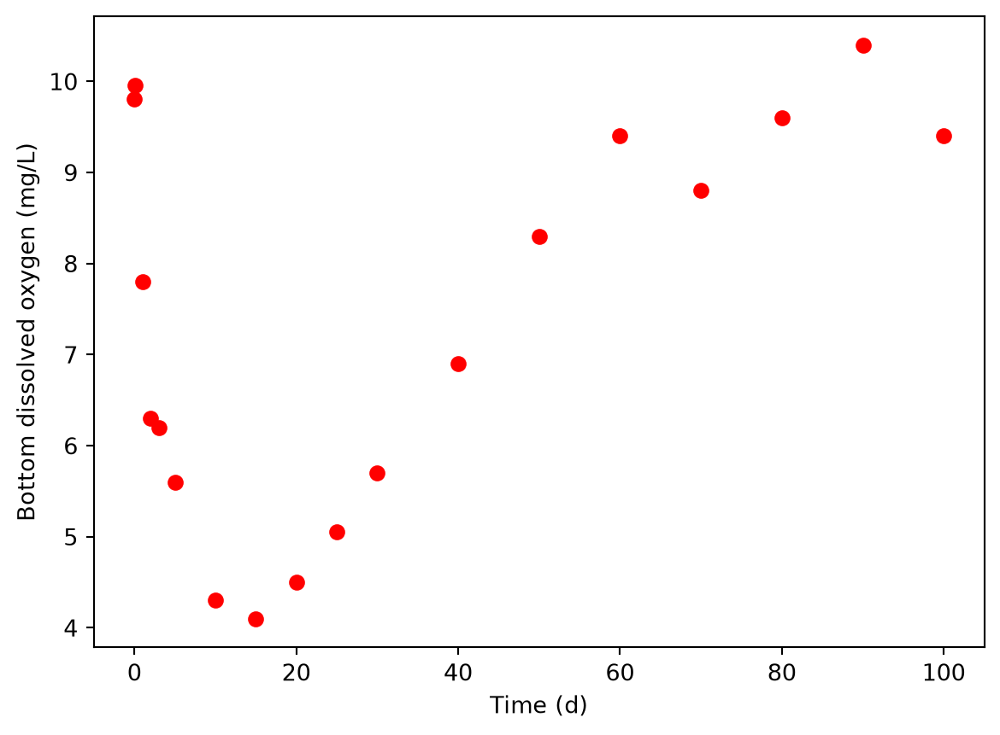

import pandas as pd
import matplotlib.pyplot as plt
mox = pd.read_csv('meas_O2.csv')
plt.plot(mox.time_day, mox.O2_mg_L, 'ro')
plt.xlabel('Time (d)')
plt.ylabel('Bottom dissolved oxygen (mg/L)')
For this project you will develop a model for oxygen and organic matter (OM) transport and consumption by aerobic bacteria in an open-top wastewater polishing lagoon with no inflow or outflow (batch). For oxygen, we have a case of mass transfer over an interface and transport within the water column, but for OM, only transport within the water column. Previously, we have dealt with systems where we could assume a liquid phase was completely mixed, and all significant resistance was present near the interface (e.g., the benzene and ammonia volatilization models). In the salt diffusion model, we assumed that transport was controlled by diffusion within the column, with no resistance at the boundaries. Here, in contrast, you will consider both types of resistance in one model! You will have to include an overall mass transfer coefficient at a phase interphase as well as 1D diffusive-like transport within the water column.
You can use a \(K_L\) value of \(3 \cdot 10^{-6}\) \(\mps\) for transport through the interface (with most resistance coming from the water film). In the water column, it is unlikely that an open lagoon would only include diffusion; heating and wind cause water mixing that increases transport well beyond what true diffusion could do. Fick’s law can still be used, but the diffusivity becomes an “effective diffusivity” or “eddy diffusivity” and has a higher numeric value than true diffusivity ever could, due to the additional transport provided by mixing. For your model, you can try a value of \(1 \cdot 10^{-6}\) \(\msqps\) and consider whether it is accurate as part of your model validation.
Assume that the wastewater contains OM that is consumed by aerobic bacteria only. In the model you need to include dissolved oxygen and OM as state variables and you can assume that OM degradation is a second-order reaction. You can also assume that it takes 1 gram of oxygen to degrade 1 gram of OM, i.e., the stoichiometric coefficient is exactly 1.0. This is usually done in the wastewater treatment field because organic matter is expressed in “oxygen demand” units.
For a reaction rate, you can assume a first- or second-order reaction, whichever you think is more appropriate. You are not expected to include the bacteria (microbial biomass) as a state variable.
The first task is to develop the 1D model of the wastewater tank with oxygen and OM as state variables. Include a sketch of the model that follow the approach explained in Chapter 2. Describe the assumptions that you made, including information on the coordinate system, simplification of the governing equations, boundary conditions, and initial conditions.
List the state variables and include the governing equations.
For your Python code, you should use a module-based approach for your model (define a model function in a *.py module and then write the code for verification, validation, and application in separate *.py scripts). Be sure to comment your code enough that someone could understand it without input from you! That information should be present in docstrings and single line comments. You can find examples of this throughout the book, an explanation in Chapter 3, and an example you could download in the parameter estimation solution.
Carry out some limited verification of your model by using some of the concepts taught in class. You are not required to include any verification results, but you may put some in an appendix if you wish. But be sure to include units in your code using comments.
An engineer at the wastewater plant measured the concentration of dissolved oxygen near the bottom of a 1.5 m deep lagoon over a couple months, starting right after filling.
The measurement data are in the meas_O2.csv file, which you can download from here: https://github.com/AU-BCE-EE/course-modelling-2026/blob/main/classes/23-16-nov-mini-proj2/exercises/meas_O2.csv.

The filling process effectively aerated the wastewater at the start, but as you can see in the measurements, dissolved oxygen concentration declined over the following days. The initial OM concentration was 0.02 kg/m3 (20 mg/L). Carry out graphical and quantitative model validation using these measurements and show the results in the report. Interpret results. If you see a difference, consider whether you are able to determine if the poor performance comes from model structure or parameter values. If you suspect parameter values, do you have enough information to know which one(s) might be wrong? You might not!
Use your model to predict at least one of the following: * how long time it takes to degrade most (at least 90%) of the initial OM (initial concentraiton of 0.02 kg/m3) in 1.5 m deep lagoon, * the minimum dissolved oxygen concentration in the lagoon with 1.5 m wastewater and time it occurs after loading a new batch of wastewater, * the effect of increasing effective diffusivity (what could cause that?), or * the effect of increased or decreased substrate degradation rate.
Include plots to support your findings, and remember that plots need to be interpreted.
You can use the following structure: * Introduction (short, but do describe the system and problem), * Model description (feel free to move details into an appendix) * Model validation * Model application * Conclusions (e.g., what do you think of your model?, how could the work be improved?, did you have any unresolved problems?, what else would you like to know about the physical/biological system?, did you get any insights into the system or how to could be better managed based on your model?, or do you have some hypotheses that could be explored in the future?) * Appendices, including Python code and any details on model verification, formulation, or other things that didn’t fit well in the main body of the report.
You are not allowed to use AI for developing the model or writing the report, but can use it for factual information. If you have not already, please turn off AI in VS Code following these instructions: https://au-bce-ee.github.io/modeling-py-book/appx_vsc_problems.html#turning-off-copilot-ai-autocomplete.
Aim for getting the essential material into a 5 page report, with additional details in appendices. More pages are OK if needed, but do not exceed 8 pages (excluding the appendices).
You work on the project and report in groups of 3-5 people.
Submit in Brightspace before 23:59 on Monday the 30th of November.
reload() in your testing script to make sure you are working with the updated version of your model function after you edit it.savefig() to export. See the parameter estimation solution for an example.Please ask for help if you are stuck or even if you just want some feedback on your work so far.